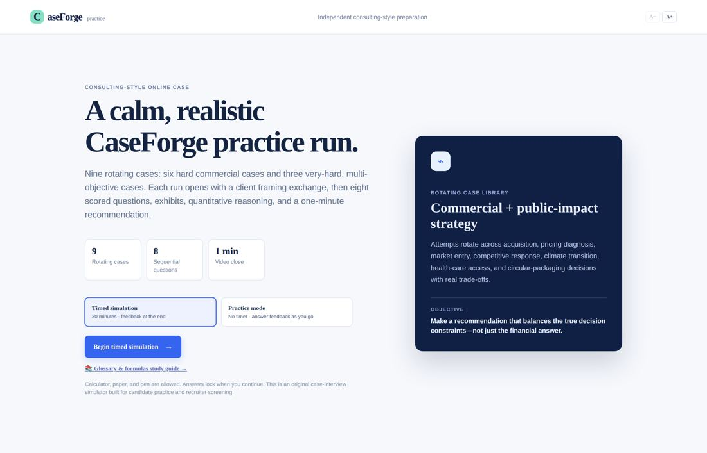
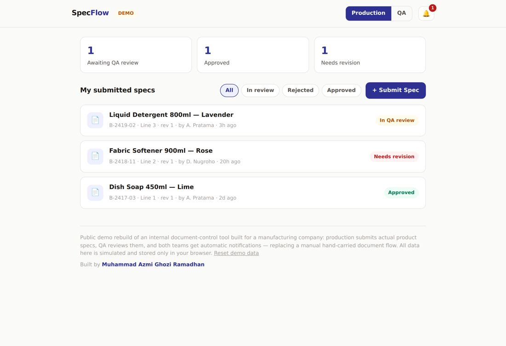

I'm Muhammad Azmi Ghozi Ramadhan. I turn manual operational workflows — planning, assessment, document control — into systems that save hours, cut errors, and explain their own decisions.
planning cycle time cut by production-planning automation
reduction in operational delay after workflow analysis
sensor time-series processed into live dashboards
A consulting-style case simulator for evaluating candidates during hiring. Candidates work through timed business cases; the platform auto-scores their reasoning and gives recruiters a per-candidate skill profile.

Two internal tools for manufacturing operations: a Python planning automation that cut cycle time 65%, and a document-control system that digitized a hand-carried Production↔QA spec flow. The live demo (SpecFlow) rebuilds the document-control logic end to end.

Maintains an alumni database by scoring likely LinkedIn matches and updating Google Sheets, with dry runs, confidence thresholds, and human review gates so automation stays conservative.
A coffee journal built end-to-end — Supabase auth, photo logs, personal stats, and map-based cafe history.
Assessment platforms, dashboards, approval flows — from spreadsheet chaos to a real app your team logs into.
Python pipelines that turn multi-hour manual cycles into minutes.
Messy Excel/legacy data validated, transformed, and loaded into a proper database.
Forecasting, process analysis, and dashboards non-technical stakeholders actually use.